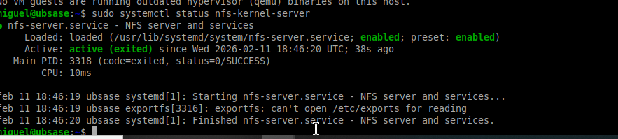
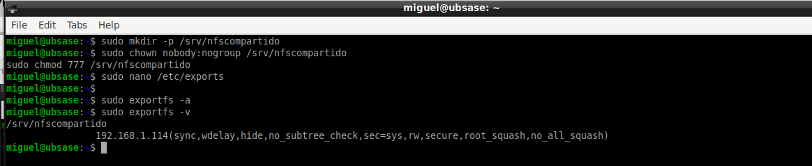
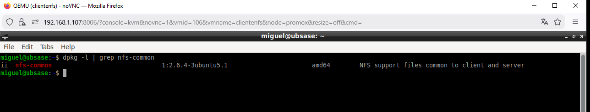
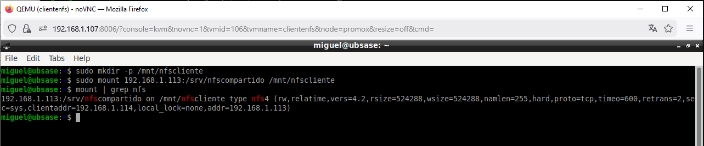
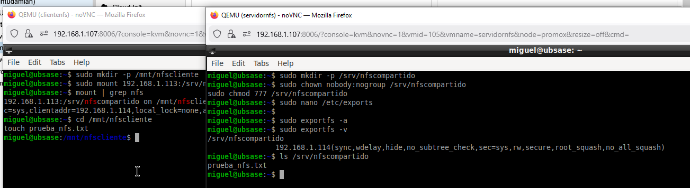
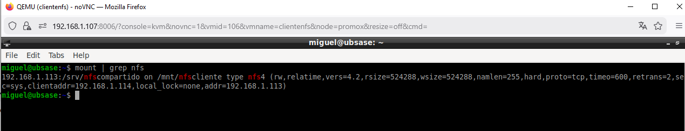

Objetivo
Configurar un servidor NFS en una máquina Linux y permitir que un cliente monte automáticamente un directorio compartido en red.
4.0 – Preparación del entorno
Se crean dos máquinas virtuales en la misma red:
- Servidor NFS – 192.168.1.113
- Cliente NFS – 192.168.1.114
Captura 4.0 – Servidor y cliente en la misma red.
4.1 – Instalación del servidor NFS
sudo apt update sudo apt install nfs-kernel-server -y sudo systemctl status nfs-kernel-server
Se verifica que el servicio aparece como active (running).
Captura 4.1 – Servicio NFS activo en el servidor.
4.2 – Configuración del directorio exportado
sudo mkdir -p /srv/nfscompartido sudo chown nobody:nogroup /srv/nfscompartido sudo chmod 777 /srv/nfscompartido
Se añade en /etc/exports:
/srv/nfscompartido 192.168.1.114(rw,sync,no_subtree_check)
sudo exportfs -a sudo exportfs -v
Captura 4.2 – Directorio exportado correctamente.
4.3 – Instalación del cliente NFS
sudo apt install nfs-common -y
Captura 4.3 – Instalación del cliente NFS.
4.4 – Montaje manual desde el cliente
sudo mkdir -p /mnt/nfscliente sudo mount 192.168.1.113:/srv/nfscompartido /mnt/nfscliente mount | grep nfs
Captura 4.4 – Montaje manual del recurso NFS.
4.5 – Prueba funcional
Se crea un archivo desde el cliente y se comprueba en el servidor su existencia. Esto confirma que la comunicación y escritura funcionan correctamente.
Captura 4.5 – Prueba de escritura cliente-servidor.
4.6 – Configuración automática en fstab
Se añade en /etc/fstab del cliente:
192.168.1.113:/srv/nfscompartido /mnt/nfscliente nfs defaults 0 0
El comando systemctl daemon-reload recarga la configuración de systemd
para que reconozca los cambios realizados en fstab.
sudo systemctl daemon-reload sudo mount -a

Captura 4.6 – Configuración del montaje automático.
4.7 – Verificación tras reinicio
Tras reiniciar el cliente, se verifica que el recurso NFS se monta automáticamente:
mount | grep nfs
Captura 4.7 – Montaje automático confirmado tras reinicio.
Conclusión
El servidor NFS ha sido configurado correctamente y el cliente puede montar el recurso tanto manual como automáticamente. La comunicación y escritura funcionan correctamente, validando el funcionamiento del servicio NFS.